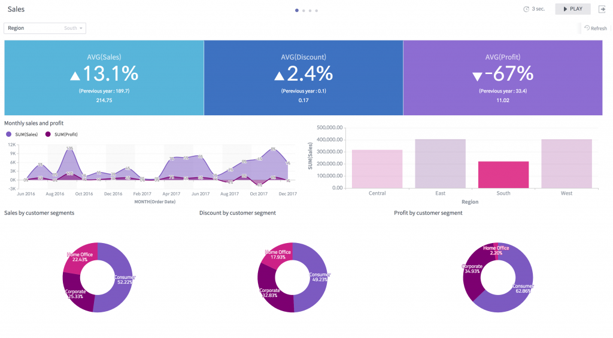
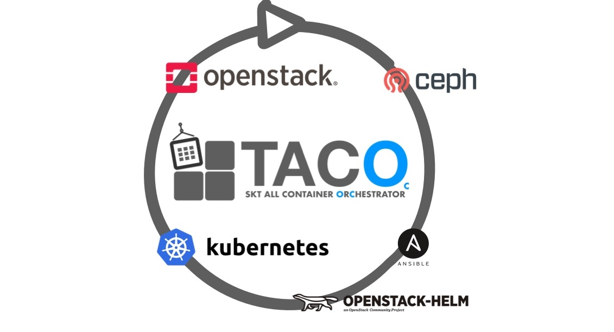
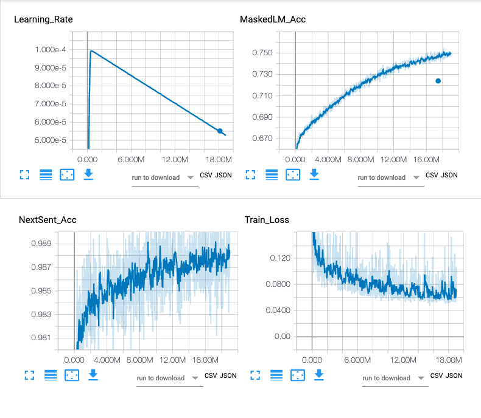
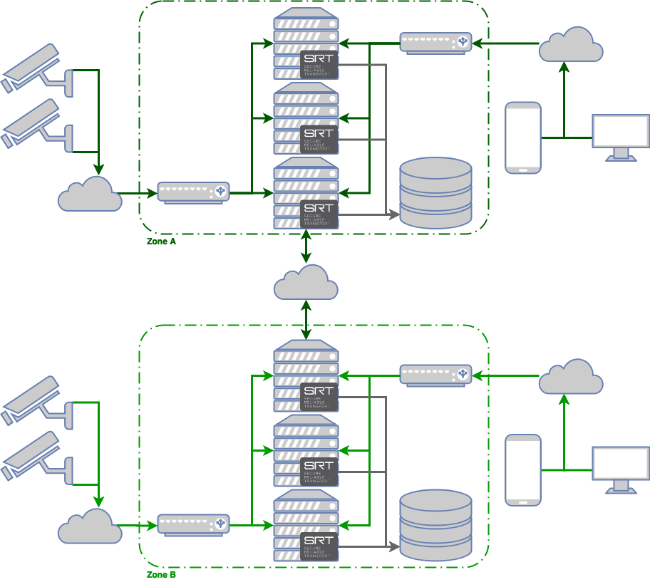

오픈소스 프로젝트
가이드
커뮤니티
GitHub
SKT의 오픈소스 활동을 소개합니다.
SKT Open Source Projects

Metatron Discovery
메타트론 디스커버리 는 SK텔레콤의 빅데이터 분석 플랫폼이다.
아파치 드루이드 엔진을 기반으로 개발 되었으며, 데이터 수집, 정제, 실시간 처리, 배치 처리 데이터 분석, 데이터 시각화까지 데이터 분석의 모든 단계를 처리할 수 있는 엔드-투-엔드 플랫폼이다.

TACO
OpenStack-Helm 기반으로 TACO (SKT All Container OpenStack) 을 만들어 출시하였으며, OpenStack과 Kubernetes등과 관련하여 다양한 개발을 진행할 계획입니다.
SONA
SONA(Simplified Overlay Networking Architecture)는 가상화 기술인 SDN(Software Defined Network)을 기반으로 기존 네트워크를 재구축하는 가상화 기술로 글로벌 오픈소스 프로젝트인 ONOS(Open Network Operating System)에 포함되어 있습니다.

KoBERT
구글 BERT base multilingual cased의 한국어 성능 한계를 극복하기 위해 직접 학습한 한국어 버트 모델을 오픈합니다.
KoGPT2
GPT-2는 머신러닝 알고리즘울 활용한 자연어 처림(NLP) 모델로 한국어로 학습된 오픈소스 기반의 koGPT-2는 일반적인 질문에 대한 응답 생성, 문장 완성, 챗봇 등 한국어 해석이 요구되는 광범위한 곳에 활용가능합니다.

황새울
초 저지연 영상 전송 플랫폼을 위한 오픈 소스 프로젝트로 드론 / 로봇 등의 이동형 보안 플랫폼에 사용하고 있습니다.
Go to Top